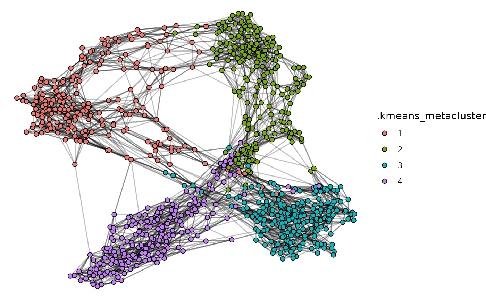
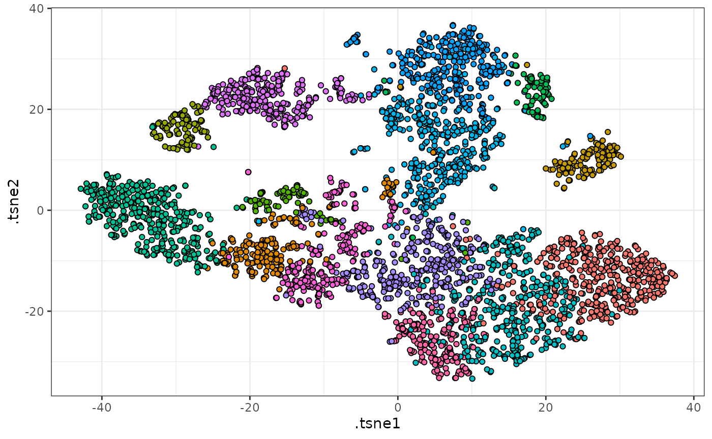

Getting started with tidytof
Timothy Keyes
2024-03-25
tidytof.RmdAnalyzing single-cell data can be surprisingly complicated. This is partially because single-cell data analysis is an incredibly active area of research, with new methods being published on a weekly - or even daily! - basis. Accordingly, when new tools are published, they often require researchers to learn unique, method-specific application programming interfaces (APIs) with distinct requirements for input data formatting, function syntax, and output data structure. On the other hand, analyzing single-cell data can be challenging because it often involves simultaneously asking questions at multiple levels of biological scope - the single-cell level, the cell subpopulation (i.e. cluster) level, and the whole-sample or whole-patient level - each of which has distinct data processing needs.
To address both of these challenges for high-dimensional cytometry, tidytof implements a concise, integrated “grammar” of single-cell data analysis capable of answering a variety of biological questions. Available as an open-source R package, tidytof provides an easy-to-use pipeline for analyzing high-dimensional cytometry data by automating many common data-processing tasks under a common “tidy data” interface. This vignette introduces you to the tidytof’s high-level API and shows quick examples of how they can be applied to high-dimensional cytometry datasets.
Prerequisites
tidytof makes heavy use of two concepts that may be
unfamiliar to R beginners. The first is the pipe (|>),
which you can read about here. The second is
“grouping” data in a data.frame or tibble
using dplyr::group_by, which you can read about here. Most
tidytof users will also benefit from a relatively
in-depth understanding of the dplyr package, which has a wonderful
introductory vignette here:
vignette("dplyr")Everything else should be self-explanatory for both beginner and advanced R users, though if you have zero background in running R code, you should read this chapter of R for Data Science by Hadley Wickham.
Workflow basics
Broadly speaking, tidytof’s functionality is organized to support the 3 levels of analysis inherent to single-cell data described above:
- Reading, writing, preprocessing, and visualizing data at the level of individual cells
- Identifying and describing cell subpopulations or clusters
- Building models (for inference or prediction) at the level of patients or samples
tidytof provides functions (or “verbs”) that operate at each of these levels of analysis:
-
Cell-level data:
-
tof_read_data()reads single-cell data from FCS or CSV files on disk into a tidy data frame called atof_tbl.tof_tbls represent each cell as a row and each protein measurement (or other piece of information associated with a given cell) as a column. -
tof_preprocess()transforms protein expression values using a user-provided function (i.e. log-transformation, centering, scaling) -
tof_downsample()reduces the number of cells in atof_tibblevia subsampling. -
tof_reduce_dimensions()performs dimensionality reduction (across columns) -
tof_write_datawrites single-cell data in atof_tibbleback to disk in the form of an FCS or CSV file.
-
-
Cluster-level data:
-
tof_cluster()clusters cells using one of several algorithms commonly applied to high-dimensional cytometry data -
tof_metacluster()agglomerates clusters into a smaller number of metaclusters -
tof_analyze_abundance()performs differential abundance analysis (DAA) for clusters or metaclusters across experimental groups -
tof_analyze_expression()performs differential expression analysis (DEA) for clusters’ or metaclusters’ marker expression levels across experimental groups -
tof_extract_features()computes summary statistics (such as mean marker expression) for each cluster. Also (optionally) pivots these summary statistics into a sample-level tidy data frame in which each row represents a sample and each column represents a cluster-level summary statistic.
-
-
Sample-level data:
-
tof_split_data()splits sample-level data into a training and test set for predictive modeling -
tof_create_grid()creates an elastic net hyperparameter search grid for model tuning -
tof_train_model()trains a sample-level elastic net model and saves it as atof_modelobject -
tof_predict()Applies a trainedtof_modelto new data to predict sample-level outcomes -
tof_assess_model()calculates performance metrics for a trainedtof_model
-
{tidytof} verb syntax
With very few exceptions, tidytof functions follow a specific, shared syntax that involves 3 types of arguments that always occur in the same order. These argument types are as follows:
- For almost all tidytof functions, the first argument
is a data frame (or tibble). This enables the use of the pipe
(
|>) for multi-step calculations, which means that your first argument for most functions will be implicit (passed from the previous function using the pipe). This also means that most tidytof functions are so-called “single-table verbs,” with the exception oftof_cluster_ddpr, which is a “two-table verb” (for details about how to usetof_cluster_ddpr, see the “clustering-and-metaclustering” vignette). - The second group of arguments are called column
specifications, and they end in the suffix
_color_cols. Column specifications are unquoted column names that tell a tidytof verb which columns to compute over for a particular operation. For example, thecluster_colsargument intof_clusterallows the user to specify which column in the input data frames should be used to perform the clustering. Regardless of which verb requires them, column specifications support tidyselect helpers and follow the same rules for tidyselection as tidyverse verbs likedplyr::select()andtidyr::pivot_longer(). - Finally, the third group of arguments for each
tidytof verb are called method specifications,
and they’re comprised of every argument that isn’t an input data frame
or a column specification. Whereas column specifications represent which
columns should be used to perform an operation, method specifications
represent the details of how that operation should be performed. For
example, the
tof_cluster_phenograph()function requires the method specificationnum_neighbors, which specifies how many nearest neighbors should be used to construct the PhenoGraph algorithm’s k-nearest-neighbor graph. In most cases, tidytof sets reasonable defaults for each verb’s particular method specifications, but your workflows are can also be customized by experimenting with non-default values.
The following code demonstrates how tidytof verb syntax looks in practice, with column and method specifications explicitly pointed out:
data(ddpr_data)
set.seed(777L)
ddpr_data |>
tof_preprocess() |>
tof_cluster(
cluster_cols = starts_with("cd"), # column specification
method = "phenograph", # method specification,
) |>
tof_metacluster(
cluster_col = .phenograph_cluster, # column specification
num_metaclusters = 4, # method specification
method = "kmeans" # method specification
) |>
tof_downsample(
group_cols = .kmeans_metacluster, # column specification
num_cells = 200, # method specification
method = "constant" # method specification
) |>
tof_plot_cells_layout(
knn_cols = starts_with("cd"), # column specification
color_col = .kmeans_metacluster, # column specification
num_neighbors = 7L, # method specification
node_size = 2L # method specification
)
Pipelines
tidytof verbs can be used on their own or in
combination with one another using the pipe (|>)
operator. For example, here is a multistep “pipeline” that takes a
built-in tidytof dataset and performs the following
analytical steps:
Arcsinh-transform each column of protein measurements (the default behavior of the
tof_preprocessverbCluster our cells based on the surface markers in our panel
Downsample the dataset such that 100 random cells are picked from each cluster
Perform dimensionality reduction on the downsampled dataset using tSNE
Visualize the clusters using a low-dimensional tSNE embedding
ddpr_data |>
# step 1
tof_preprocess() |>
# step 2
tof_cluster(
cluster_cols = starts_with("cd"),
method = "phenograph",
# num_metaclusters = 4L,
seed = 2020L
) |>
# step 3
tof_downsample(
group_cols = .phenograph_cluster,
method = "constant",
num_cells = 400
) |>
# step 4
tof_reduce_dimensions(method = "tsne") |>
# step 5
tof_plot_cells_embedding(
embedding_cols = contains("tsne"),
color_col = .phenograph_cluster
) +
ggplot2::theme(legend.position = "none")
#> Loading required namespace: Rtsne
Other tips
tidytof was designed by a multidisciplinary team of wet-lab biologists, bioinformaticians, and physician-scientists who analyze high-dimensional cytometry and other kinds of single-cell data to solve a variety of problems. As a result, tidytof’s high-level API was designed with great care to mirror that of the tidyverse itself - that is, to be human-centered, consistent, composable, and inclusive for a wide userbase.
Practically speaking, this means a few things about using tidytof.
First, it means that tidytof was designed with a few
quality-of-life features in mind. For example, you may notice that most
tidytof functions begin with the prefix
tof_. This is intentional, as it will allow you to use your
development environment’s code-completing software to search for
tidytof functions easily (even if you can’t remember a
specific function name). For this reason, we recommend using
tidytof within the RStudio development environment;
however, many code editors have predictive text functionality that
serves a similar function. In general, tidytof verbs are
organized in such a way that your IDE’s code-completion tools should
also allow you to search for (and compare) related functions with
relative ease. (For instance, the tof_cluster_ prefix is
used for all clustering functions, and the tof_downsample_
prefix is used for all downsampling functions).
Second, it means that tidytof functions
should be relatively intuitive to use due to their shared logic
- in other words, if you understand how to use one
tidytof function, you should understand how to use most
of the others. An example of shared logic across tidytof
functions is the argument group_cols, which shows up in
multiple verbs (tof_downsample, tof_cluster,
tof_daa, tof_dea,
tof_extract_features, and tof_write_data). In
each case, group_cols works the same way: it accepts an
unquoted vector of column names (specified manually or using tidyselection)
that should be used to group cells before an operation is performed.
This idea generalizes throughout tidytof: if you see an
argument in one place, it will behave identically (or at least very
similarly) wherever else you encounter it.
Finally, it means that tidytof is optimized first for ease-of-use, then for performance. Because humans and computers interact with data differently, there is always a trade-off between choosing a data representation that is intuitive to a human user vs. choosing a data representation optimized for computational speed and memory efficiency. When these design choices conflict with one another, our team tends to err on the side of choosing a representation that is easy-to-understand for users even at the expense of small performance costs. Ultimately, this means that tidytof may not be the optimal tool for every high-dimensional cytometry analysis, though hopefully its general framework will provide most users with some useful functionality.
Session info
sessionInfo()
#> R version 4.3.3 (2024-02-29)
#> Platform: x86_64-pc-linux-gnu (64-bit)
#> Running under: Ubuntu 22.04.4 LTS
#>
#> Matrix products: default
#> BLAS: /usr/lib/x86_64-linux-gnu/openblas-pthread/libblas.so.3
#> LAPACK: /usr/lib/x86_64-linux-gnu/openblas-pthread/libopenblasp-r0.3.20.so; LAPACK version 3.10.0
#>
#> locale:
#> [1] LC_CTYPE=C.UTF-8 LC_NUMERIC=C LC_TIME=C.UTF-8
#> [4] LC_COLLATE=C.UTF-8 LC_MONETARY=C.UTF-8 LC_MESSAGES=C.UTF-8
#> [7] LC_PAPER=C.UTF-8 LC_NAME=C LC_ADDRESS=C
#> [10] LC_TELEPHONE=C LC_MEASUREMENT=C.UTF-8 LC_IDENTIFICATION=C
#>
#> time zone: UTC
#> tzcode source: system (glibc)
#>
#> attached base packages:
#> [1] stats graphics grDevices utils datasets methods base
#>
#> other attached packages:
#> [1] tidytof_0.99.1
#>
#> loaded via a namespace (and not attached):
#> [1] gridExtra_2.3 rlang_1.1.3 magrittr_2.0.3
#> [4] matrixStats_1.2.0 compiler_4.3.3 systemfonts_1.0.6
#> [7] vctrs_0.6.5 stringr_1.5.1 pkgconfig_2.0.3
#> [10] shape_1.4.6.1 fastmap_1.1.1 labeling_0.4.3
#> [13] ggraph_2.2.1 utf8_1.2.4 rmarkdown_2.26
#> [16] prodlim_2023.08.28 tzdb_0.4.0 ragg_1.3.0
#> [19] purrr_1.0.2 xfun_0.42 glmnet_4.1-8
#> [22] cachem_1.0.8 jsonlite_1.8.8 recipes_1.0.10
#> [25] highr_0.10 tweenr_2.0.3 parallel_4.3.3
#> [28] R6_2.5.1 bslib_0.6.2 stringi_1.8.3
#> [31] parallelly_1.37.1 rpart_4.1.23 lubridate_1.9.3
#> [34] jquerylib_0.1.4 Rcpp_1.0.12 iterators_1.0.14
#> [37] knitr_1.45 future.apply_1.11.1 readr_2.1.5
#> [40] flowCore_2.14.2 Matrix_1.6-5 splines_4.3.3
#> [43] nnet_7.3-19 igraph_2.0.3 timechange_0.3.0
#> [46] tidyselect_1.2.1 yaml_2.3.8 viridis_0.6.5
#> [49] timeDate_4032.109 doParallel_1.0.17 codetools_0.2-19
#> [52] listenv_0.9.1 lattice_0.22-5 tibble_3.2.1
#> [55] Biobase_2.62.0 withr_3.0.0 Rtsne_0.17
#> [58] evaluate_0.23 future_1.33.1 desc_1.4.3
#> [61] survival_3.5-8 polyclip_1.10-6 pillar_1.9.0
#> [64] foreach_1.5.2 stats4_4.3.3 generics_0.1.3
#> [67] RcppHNSW_0.6.0 S4Vectors_0.40.2 hms_1.1.3
#> [70] ggplot2_3.5.0 munsell_0.5.0 scales_1.3.0
#> [73] globals_0.16.3 class_7.3-22 glue_1.7.0
#> [76] tools_4.3.3 data.table_1.15.2 gower_1.0.1
#> [79] fs_1.6.3 graphlayouts_1.1.1 tidygraph_1.3.1
#> [82] grid_4.3.3 yardstick_1.3.1 tidyr_1.3.1
#> [85] RProtoBufLib_2.14.1 ipred_0.9-14 colorspace_2.1-0
#> [88] ggforce_0.4.2 cli_3.6.2 textshaping_0.3.7
#> [91] fansi_1.0.6 cytolib_2.14.1 viridisLite_0.4.2
#> [94] lava_1.8.0 dplyr_1.1.4 gtable_0.3.4
#> [97] sass_0.4.9 digest_0.6.35 BiocGenerics_0.48.1
#> [100] ggrepel_0.9.5 farver_2.1.1 memoise_2.0.1
#> [103] htmltools_0.5.7 pkgdown_2.0.7 lifecycle_1.0.4
#> [106] hardhat_1.3.1 MASS_7.3-60.0.1